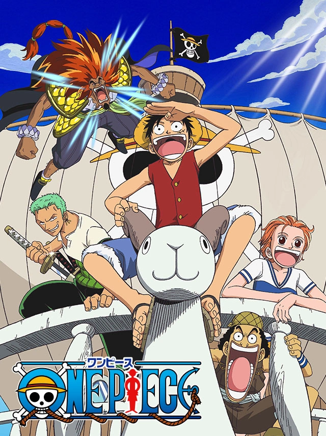

MANGA
One Piece
Eiichiro Oda · Publishing · 1997 · ★ 9.20
Language
Eiichiro Oda Publishing 1997 ★ 9.20
Follow Monkey D. Luffy and his crew as they set sail in search of the legendary One Piece treasure, meeting allies and rivals across the Grand Line. Their journey carries them through the seas and toward the mysteries of the world.
ON THIS DEVICE3 OF 48
VOLUMES48
0 selected